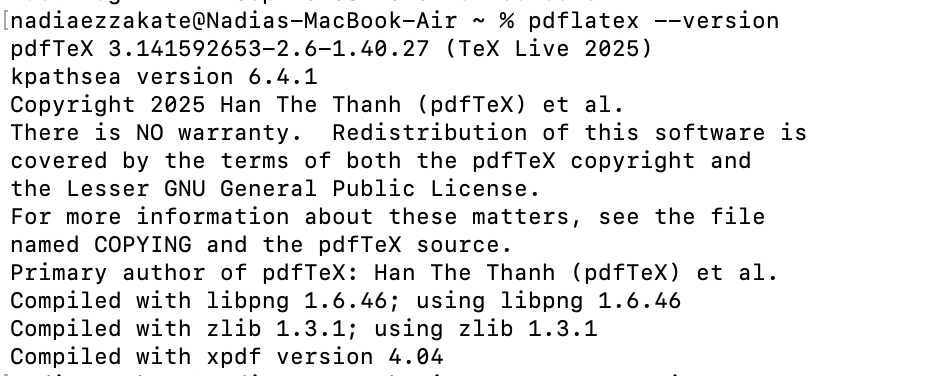
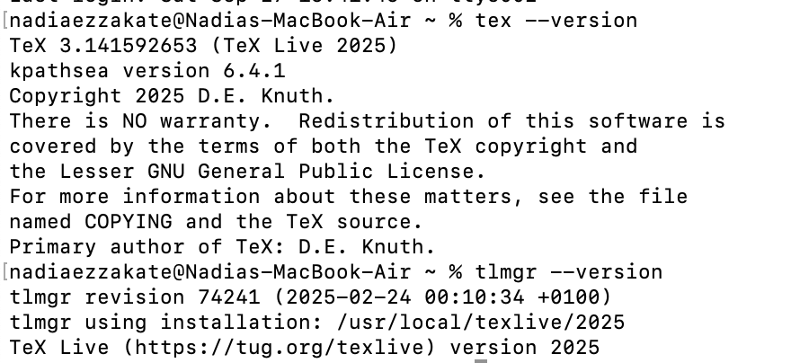

The objective of this laboratory work is to install TexLive.
Tasks: Review and work with the installation of TexLive.
TeX Live — the most complete LaTeX distribution supported by the TeX community.
Ubuntu:
apt install texlive-full
Windows (using Chocolatey package manager):
choco install texlive
cd /tmp/
wget https://mirror.ctan.org/systems/texlive/tlnet/install-tl-unx.tar.gz
For Windows: Run the executable file and install.
For Linux:
tar xzvf install-tl-unx.tar.gz
cd install-tl-[0-9]*
sudo ./install-tl
/usr/local/bin directory. To do this, in the console version of the utility, select the O option, and then L. To return to the previous menu, use R.It is recommended to install the new version of TeX Live separately.
tlmgr path add), remove them:tlmgr path remove
Move the entire TeX Live directory to match the new version, for example:
mv /usr/local/texlive/2024/ /usr/local/texlive/2025
Remove package backups:
rm /usr/local/texlive/2025/tlpkg/backups/*
Create links to executables:
/usr/local/texlive/2025/bin/x86_64-linux/tlmgr path add
Download the latest version of the script update-tlmgr-latest.sh:
wget https://mirror.ctan.org/systems/texlive/tlnet/update-tlmgr-latest.sh -O /tmp/update-tlmgr-latest.sh
Run the script:
sh /tmp/update-tlmgr-latest.sh --upgrade
If you do not want to use the default repository for downloading new files, then replace it:
tlmgr option repository <reponame>
Update the TeX Live package manager:
tlmgr update --self
Update TeX Live packages:
tlmgr update --all
Set symbolic links to executables in system directories (/usr/local/bin):
tlmgr path add
You can recreate the cache lualatex under the user:
mv ~/.texlive2024 ~/.texlive2025
luaotfload-tool -fu
If you don't do this, the cache will be recreated on the first run of lualatex.
(see Fig. [-@fig:001])

{ #fig:001 width=100% }(see Fig. [-@fig:002])

{ #fig:002 width=100% }Thus, the objective of installing TeXlive was achieved.
Thank you for your attention